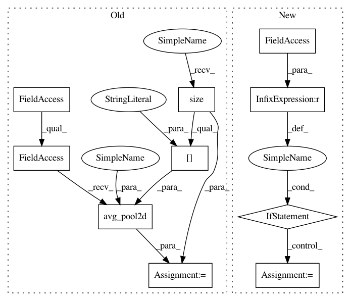

710b9ac1a28d418bddc41aeeda320ab4de4d17fe,torchreid/models/resnet.py,ResNet101,forward,#ResNet101#Any#,47
Before Change
def forward(self, x):
x = self.base(x)
x = F.avg_pool2d(x, x.size()[2:])
f = x.view(x.size(0), -1)
if not self.training:
return f
y = self.classifier(f)
After Change
out = self.conv2(out)
out = self.bn2(out)
if self.downsample is not None:
residual = self.downsample(x)
out += residual
out = self.relu(out)
return out
In pattern: SUPERPATTERN
Frequency: 3
Non-data size: 10
Instances
Project Name: KaiyangZhou/deep-person-reid
Commit Name: 710b9ac1a28d418bddc41aeeda320ab4de4d17fe
Time: 2018-10-26
Author: k.zhou@qmul.ac.uk
File Name: torchreid/models/resnet.py
Class Name: ResNet101
Method Name: forward
Project Name: KaiyangZhou/deep-person-reid
Commit Name: 710b9ac1a28d418bddc41aeeda320ab4de4d17fe
Time: 2018-10-26
Author: k.zhou@qmul.ac.uk
File Name: torchreid/models/resnet.py
Class Name: ResNet101
Method Name: forward
Project Name: KaiyangZhou/deep-person-reid
Commit Name: 710b9ac1a28d418bddc41aeeda320ab4de4d17fe
Time: 2018-10-26
Author: k.zhou@qmul.ac.uk
File Name: torchreid/models/resnet.py
Class Name: ResNet50
Method Name: forward
Project Name: KaiyangZhou/deep-person-reid
Commit Name: 7ff331f871b563d1dbb36472de28d1a692d8b4af
Time: 2019-03-05
Author: k.zhou@qmul.ac.uk
File Name: torchreid/models/mobilenetv2.py
Class Name: MobileNetV2
Method Name: forward